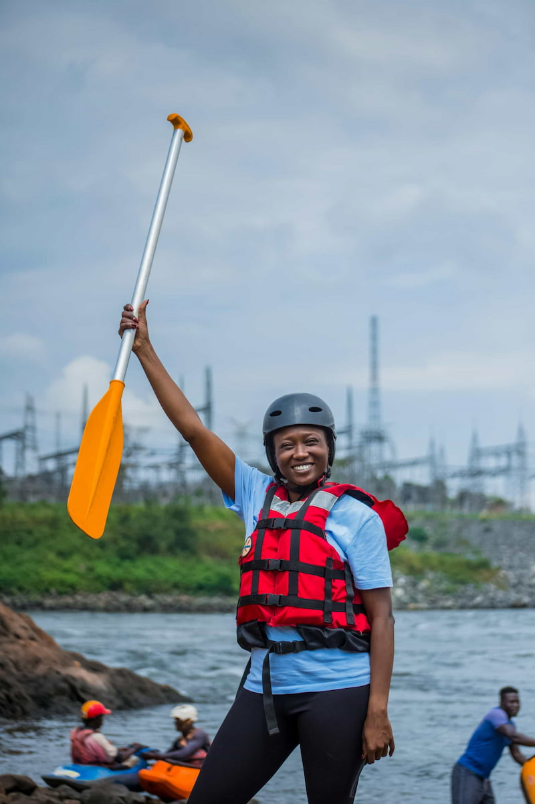
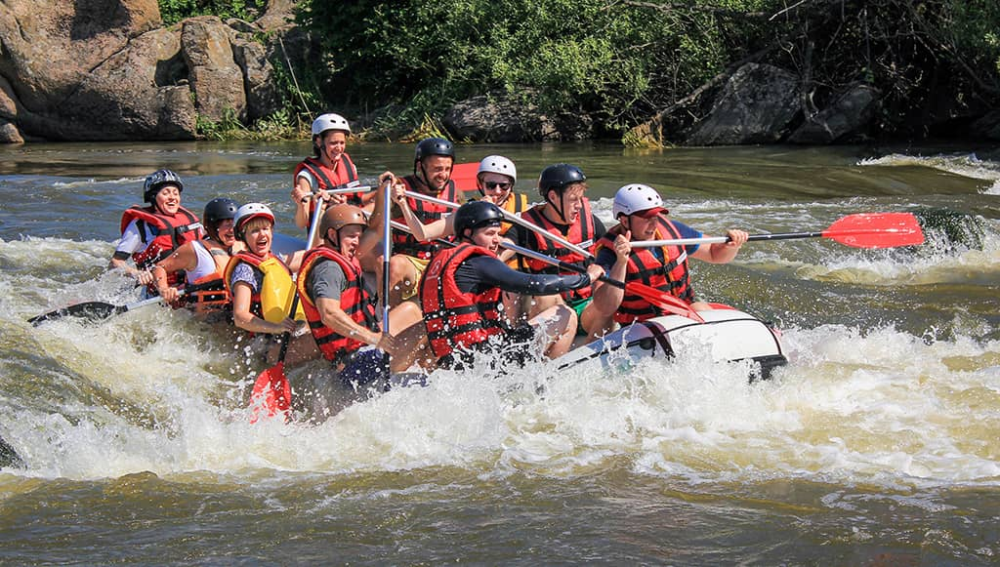

Our mission is to provide thrilling and safe rafting experiences that bring people closer to nature. We believe in adventure, teamwork, and unforgettable moments on the river. Join us and discover the excitement that awaits!


Our mission is to provide thrilling and safe rafting experiences that bring people closer to nature. We believe in adventure, teamwork, and unforgettable moments on the river. Join us and discover the excitement that awaits!
Founded with a passion for adventure, White Water Rafting started as a small group of river enthusiasts. Over the years, we have grown into a trusted provider of rafting experiences, guiding thousands of adventurers safely through some of the most exciting rivers.